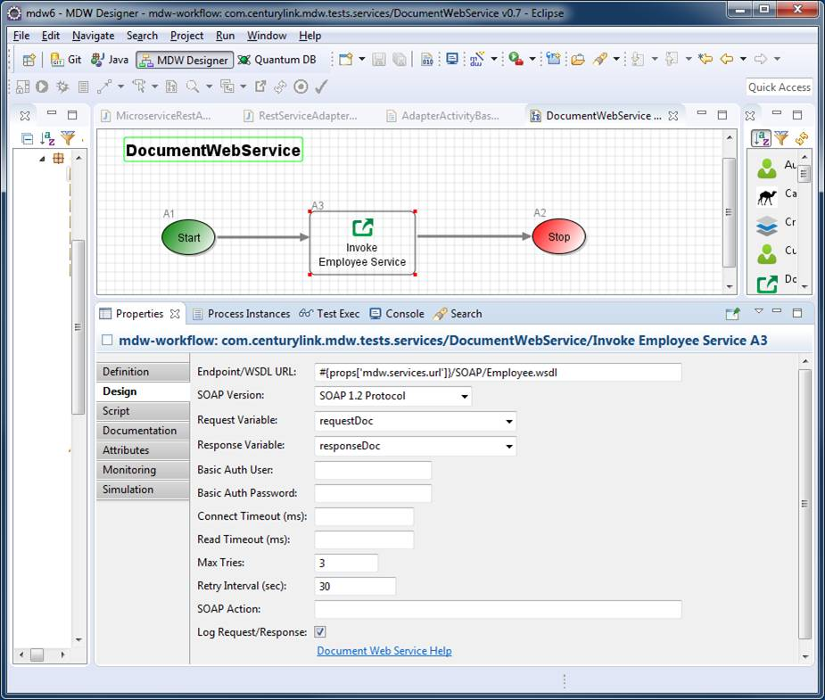

Document Web Service Adapter Activity
The MDW Document Web Service Adapter Activity provides the ability to invoke document-literal style SOAP services using an arbitrary WSDL definition.
Design Attributes
The basic design parameters for configuring a Document Web Service Adapter are illustrated in the screenshot below.
The first attribute to specify is the WSDL or endpoint URL for your service request.
The contents of the request document variable are wrapped within a SOAP envelope and HTTP POSTed to this URL.
Then the response is unwrapped from its SOAP envelope, and the top-element contents are saved in the response variable.
The Timeout settings are optional.
To populate or read the SOAP or HTTP header values, extend the base class and implement the appropriate methods.
The Document Web Service Adapter supports "Http Basic Authentication" for any targeted web services that require a user/password. The user can enter a user/password combination which will be encoded as per the Basic Authentication guidelines, and sent with each request.
